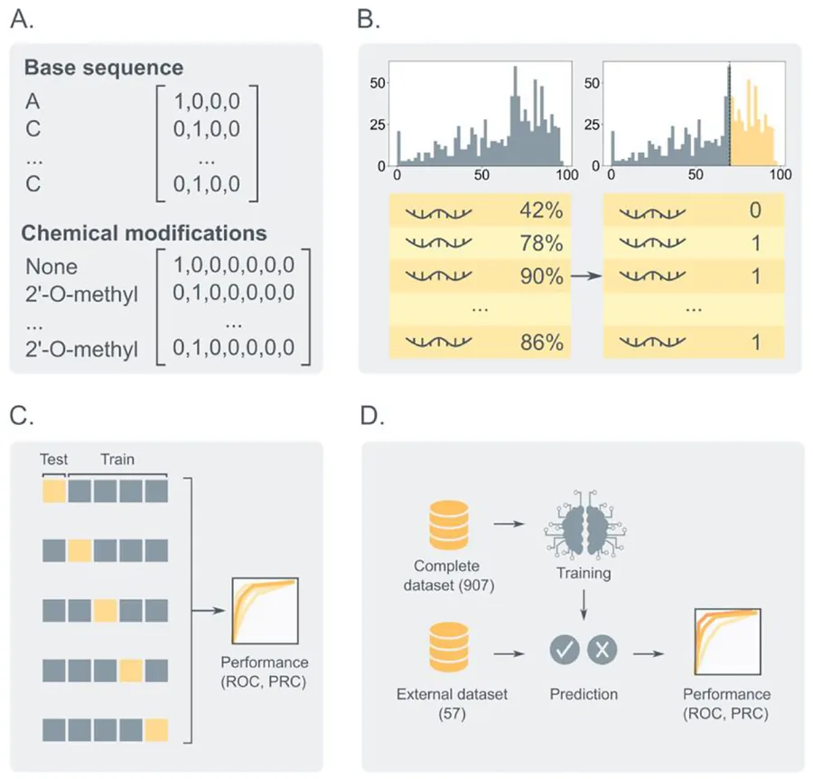

From sequences to therapeutics: using machine learning to predict chemically modified siRNA activity
Genomics 116(2), 110815, 2024 · CC BY-NC 4.0 · project page
Fig. 3: bases and modifications one-hot encoded, labelled against an efficacy threshold, five-fold cross-validated, then tested on external data.